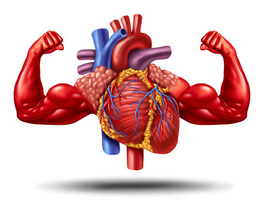
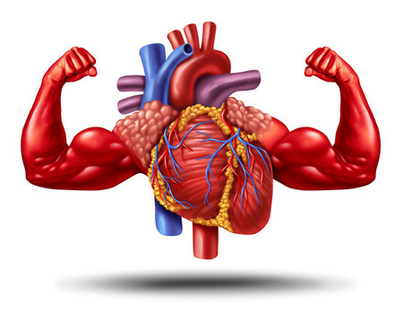

Heart Health Information
Precautions for Heart Health
A healthy heart is essential for overall well-being. Here are some precautions to maintain heart health:
- Avoid smoking and exposure to secondhand smoke.
- Eat a balanced diet low in saturated fats, cholesterol, and sodium.
- Engage in regular physical activity, such as brisk walking, swimming, or cycling.
- Maintain a healthy weight and waist circumference.
- Monitor blood pressure and cholesterol levels regularly.
- Manage stress through relaxation techniques like meditation, deep breathing, or yoga.
- Avoid excessive alcohol consumption.
- Get adequate sleep and rest.
Cures for Heart Health
While there is no magic cure for heart-related issues, several treatments and lifestyle modifications can improve heart health:
- Medications: Depending on the condition, medications may be prescribed to manage symptoms and reduce the risk of complications.
- Cardiac rehabilitation: This program includes exercise training, education, and counseling to improve heart health and reduce the risk of future heart problems.
- Surgery: In some cases, surgical procedures such as angioplasty, bypass surgery, or valve repair may be necessary to treat heart conditions.
- Lifestyle changes: Adopting a heart-healthy lifestyle, including a nutritious diet, regular exercise, stress management, and quitting smoking, can significantly improve heart health.
- Medical devices: Devices such as pacemakers or implantable cardioverter-defibrillators (ICDs) may be recommended to regulate heart rhythm and prevent sudden cardiac arrest.
 
